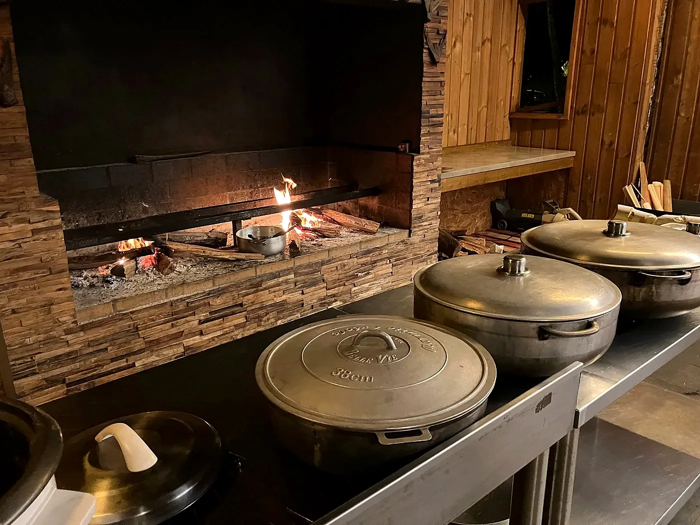
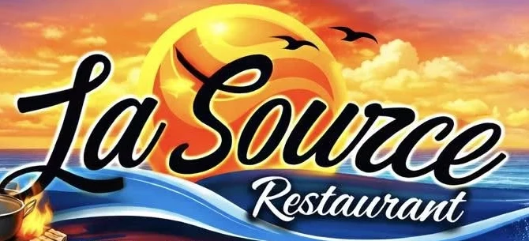
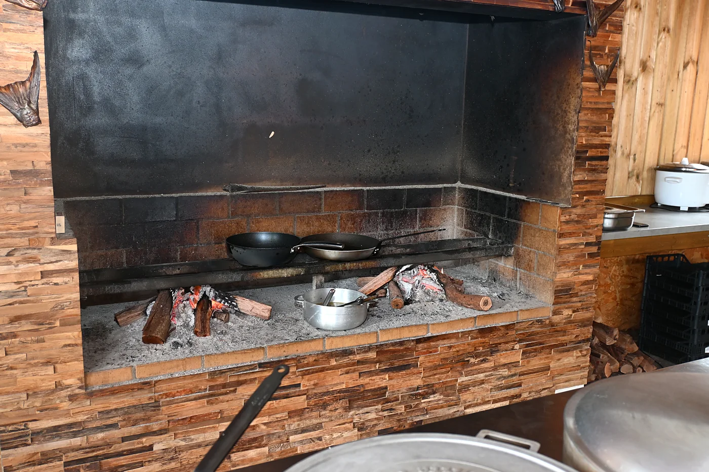
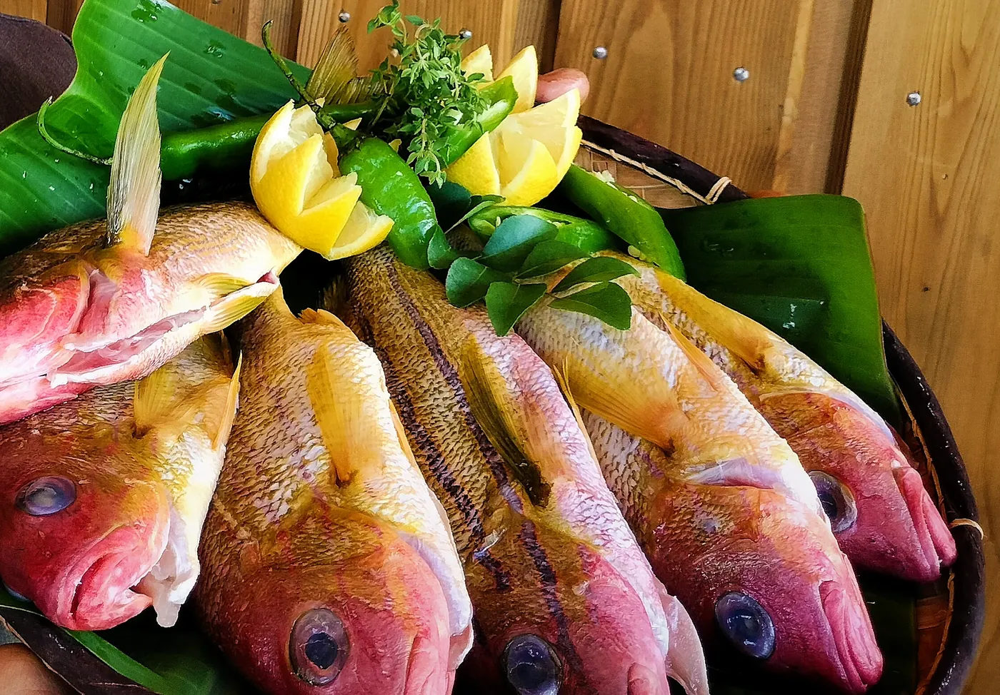
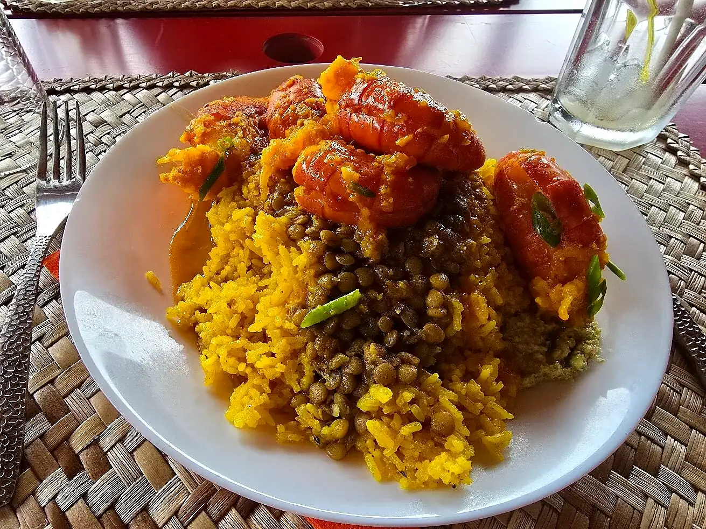
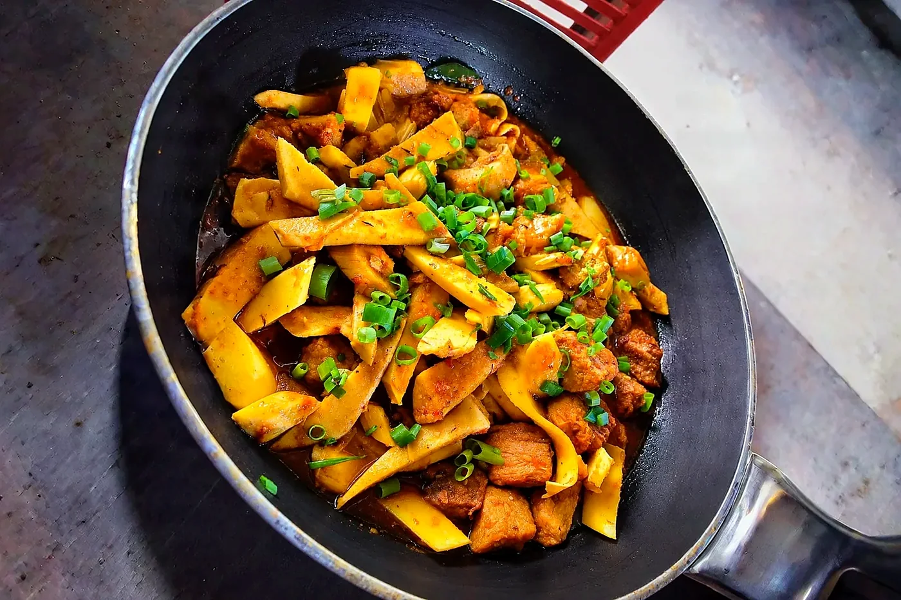
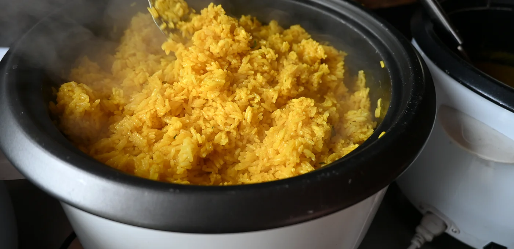
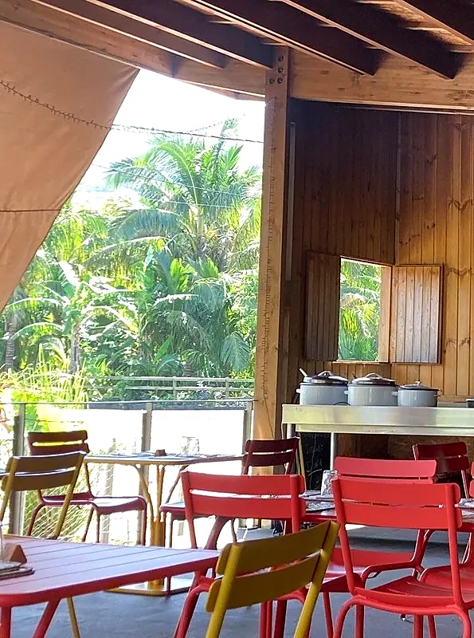
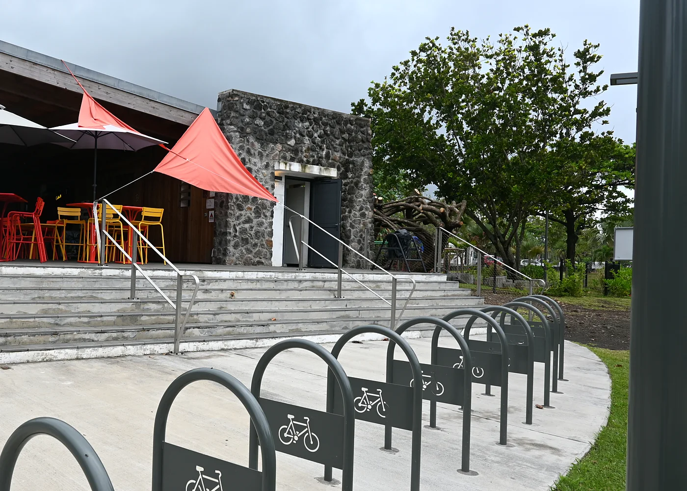
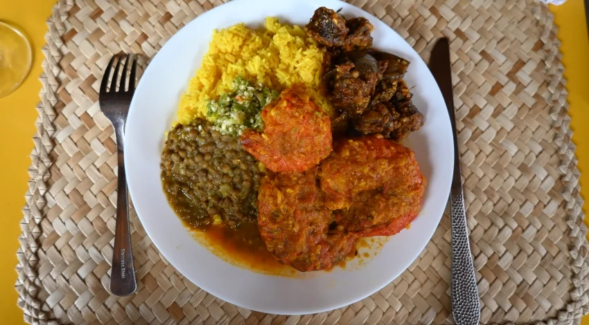

Puits des Anglais · Saint-Philippe
La Sourceau feu de bois
Cuisine réunionnaise authentique au feu de bois. Les spécialités de Saint-Philippe : choux vacoa, palmiste rouge, poisson frais. Saveurs péi, ambiance chaleureuse.
Site du Puits des Anglais, Baril-les-Bains · 97442 Saint-Philippe · Repos le mercredi
La cuisine
Ici, tout mijote au feu de bois
À La Source, la cuisine réunionnaise se prépare comme il se doit : sur le feu de bois, dans les grandes marmites, au rythme des bûches qui crépitent.
« Cuisine réunionnaise authentique au feu de bois »
Les produits de Saint-Philippe sont à l'honneur, et l'accueil a le goût de la maison.

Spécialités de Saint-Philippe
Les trésors du Sud sauvage
Trois produits qui font la fierté de la commune, servis à La Source.
Choux vacoa
Le cœur du vacoa, emblème de Saint-Philippe, cuisiné à la réunionnaise.
Palmiste rouge
Le palmiste rouge du pays, trésor de la côte sud.
Poisson frais
Le poisson frais, tout droit de l'océan qui borde Saint-Philippe.




Faites glisser pour voir les assiettes →


Le lieu
Au Puits des Anglais, face au Sud sauvage
La Source vous accueille sur le site du Puits des Anglais, à Baril-les-Bains : une salle ouverte sur les palmiers, des chaises aux couleurs du soleil et la côte toute proche.
Les soirées de La Source
Soirée karaoké
On fait chauffer les micros !
Régulièrement, le vendredi soir, La Source se transforme en scène : venez chanter, danser et passer une soirée conviviale entre amis ou en famille.
Les grands matchs aussi se vivent à La Source, sur écran géant. Les prochaines dates sont annoncées sur la page Facebook.
Offrir pour Noël
Offrez un bon moment au feu de bois
Pour Noël, faites plaisir avec un repas à La Source : la cuisine péi, la chaleur du feu de bois et l'air du Sud sauvage.
Un repas à offrir
Un déjeuner au Puits des Anglais pour vos proches : une idée cadeau pleine de saveurs péi.
La grande tablée des fêtes
Réunissez la famille autour des marmites pour un repas de fin d'année.
Une soirée entre amis
Chantez l'année qui se termine lors d'une soirée karaoké à La Source.
Venir à La Source
Réservez votre table
Adresse · Site du Puits des Anglais (Baril-les-Bains), 97442 Saint-Philippe
Téléphone · 0693 11 85 42
E-mail · lasource.reunion@gmail.com
Ouverture · repos le mercredi
